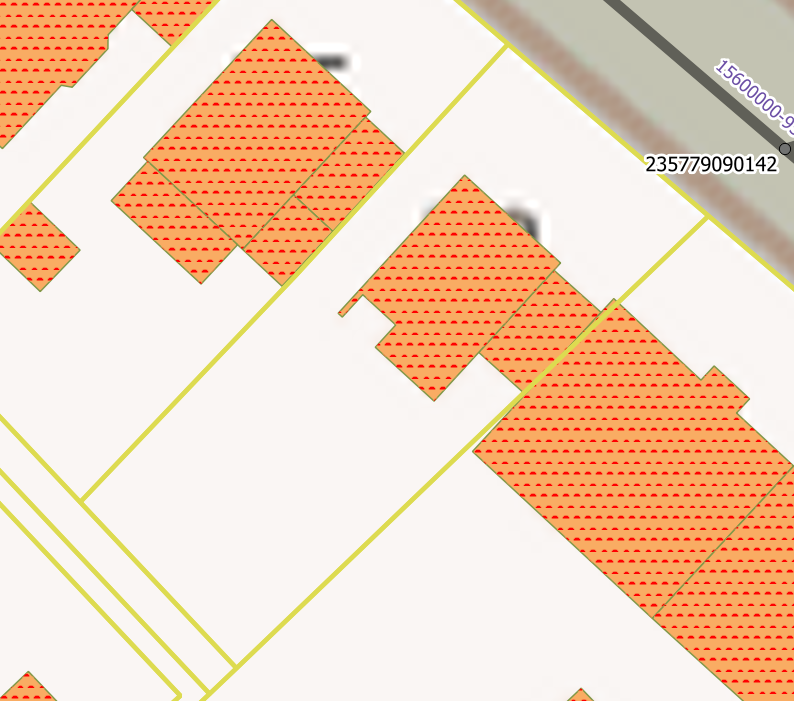
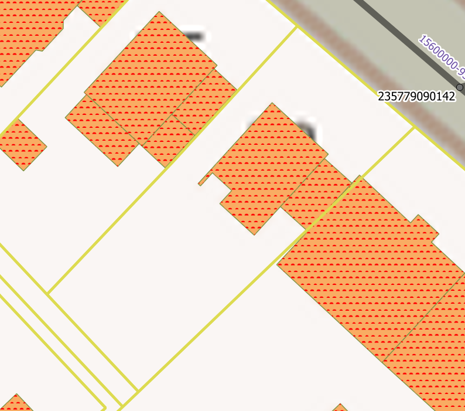
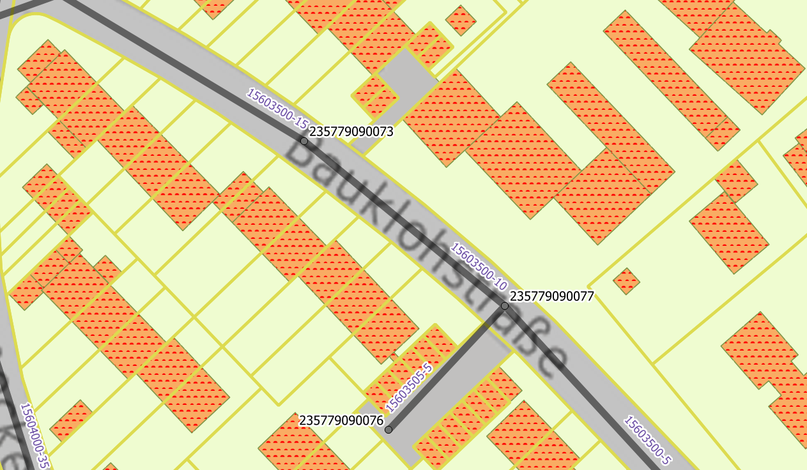
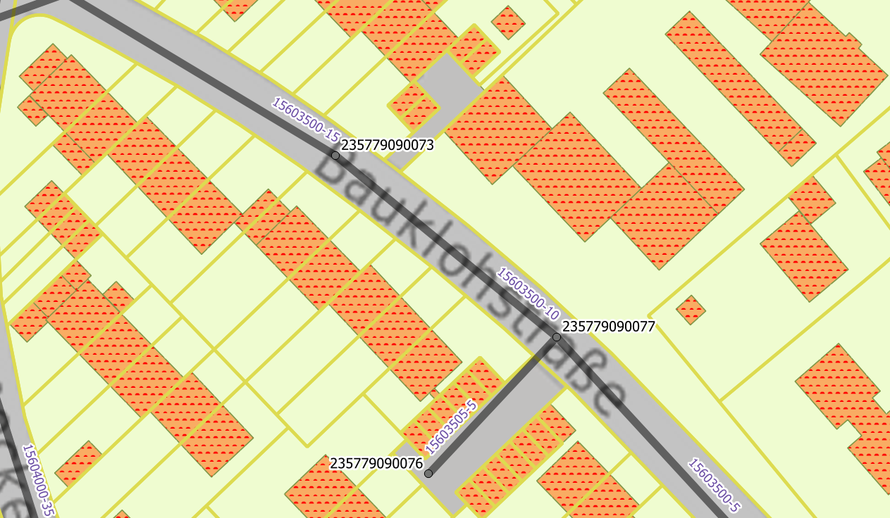

5. Erzeugung unbefestigter Flächen¶
Bevor die unbefestigten Flächen erzeugt werden können ist es wichtig, zu prüfen, ob die Attributtabellen der Flächenobjekte („Haltungsflächen“ und „Flächen“) vollständig ausgefüllt sind. Das bedeutet, die Spalten „Name“, „Teilgebiet“, „Regenschreiber“ und „Abflussparameter“ müssen vollständig ausgefüllt sein. Wenn keine Flächen vorhanden sind oder die Tabellen unvollständig sind, ist :ref: hier<Import_gebaeudedaten> eine Beschreibung des Vorgehens.
Außerdem sollten vor der Erzeugung der unbefestigten Flächen kleinere Flächen verschmolzen werden, um die Anzahl der Flächenschwerpunkte für die Abflussberechnung zu begrenzen. Vor allem auf dem Layer „Haltungsflächen“ kann es zu sehr kleinen Flächenstreifen/-ecken kommen, die mit größeren Flächen verschmolzen werden können. Dazu muss der Layer im Bearbeitungsmodus sein. Anschließend muss die kleine Fläche und eine angrenzende größere Fläche ausgewählt werden und mit dem Verschmelzungs-Tool (Icon?) vereint werden. Wichtig hierbei ist, dass dabei die Option „Attribute des Objektes mit der größten Fläche verwenden“ gewählt wird. Ein Beispiel für eine sinnvolle Verschmelzung ist hier gegeben:
 

Sind die Fläche ausreichend vorbereitet sollten die Änderungen gespeichert werden und der Bearbeitungsmodus deaktiviert werden. Nun können die unbefestigten Flächen erstellt werden. Dies geschieht ganz leicht durch das Qkan-Tool „Erzeuge unbefestigte Flächen“. Wenn dieses Werkzeug angeklickt wird, öffnet sich automatisch ein Fenster welches ohne eine Auswahl mit „OK“ bestätigt werden kann.

Die unbefestigten Flächen werden nun automatisch erstellt und liegen auf dem Layer „$Default_Unbef“ welches auch die Schraffur der Flächen anzeigt.
 

Als nächstes müssen die befestigten Flächen für die Zuordnung zu den Haltungen vorbereitet werden.